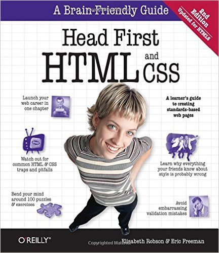

The only real hang up I had was trying to get my IDE to communicate effectively with github. Also, setting up github and making sure everything updated correctly. It took me a minute to realize that I couldn't create a file structure on github directly. I instead created the files on my local machine and then pushed them there. Also, my IDE has a button to commit, but commit doesn't equal push.
Well, I learned everything that I did on this page. I haven't really played around with html before, and what little I had done was nearly a decade ago. It seems pretty straightforward so far. I wanted everything to be indented correctly, so I googled how to do that.
The most helpful resource for me personally has always been any "Head First" book. Some people love these books and others hate them. The abstract way they present the information is conducive to my learning style.
Other than that book, searching the internet for the specifics of exactly what I'm trying to figure out, is usually the fastest solution. One website that I came across was w3schools.com.
Last week I had thought that I had github functioning correctly. Turns out, I did not. While signing up for a github account, I mistakenly created a private repo (which is cool actually) and pushed my assignment to that. Well, that's great and all, but there is no way for the instructor to view it. One thing that I didn't seem to comprehend was the differing github accounts. It's actually kind of embarrassing for me. The trouble was, I was logged in to github, but didn't comprehend that the classroom repo was where I was to push my files. I interpreted it as if it were a set of instructions.
I'm using Webstorm to learn to code on. I want to be able to clone repos easily and keep them all in the same local directory. I've been struggling to get that functioning correctly.
Answer after completing asignment...
Answer after completing assignment...
Github